甘川文化村
被譽為「釜山馬丘比丘」，數十棟彩色小屋依山丘階梯錯落，原本是貧民區，現蛻變成藝術文化村。穿巷走弄處處驚喜，是釜山最具代表性的文化景點。
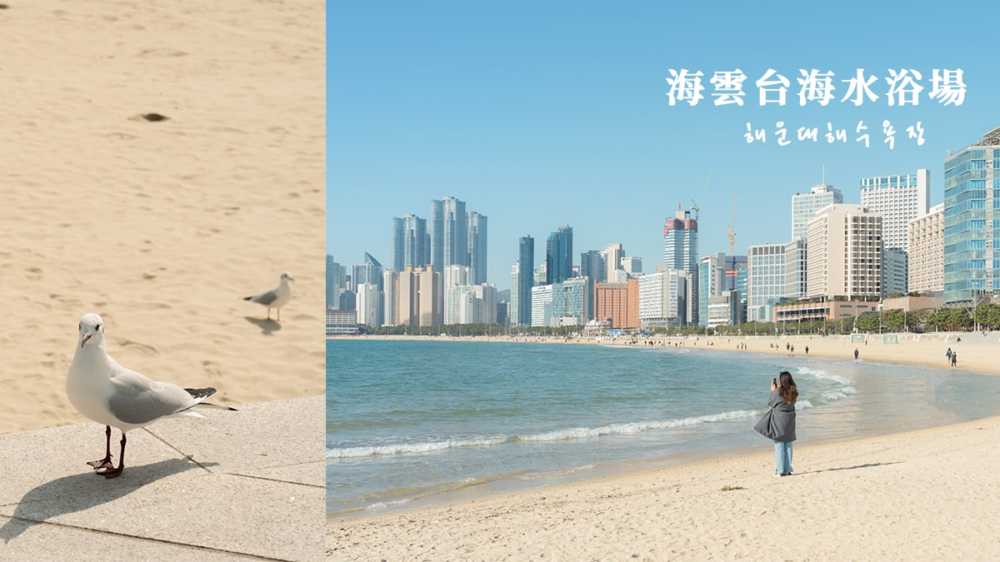
海雲台海水浴場
釜山最具代表性的海水浴場，夏天戲水人潮洶湧，秋日則多了份悠閒與浪漫。沙灘延綿數百公尺，是散步、觀夕陽的絕佳去處。
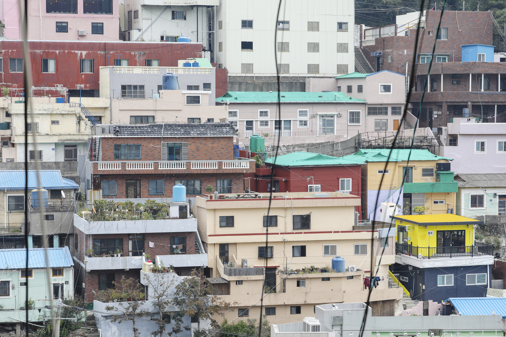
廣安里海水浴場
以廣安里大橋夜景聞名的海水浴場，浪漫指數破表。秋夜涼爽，坐在沙灘上看大橋燈光與海面波光相映，是釜山夜晚最動人的畫面。
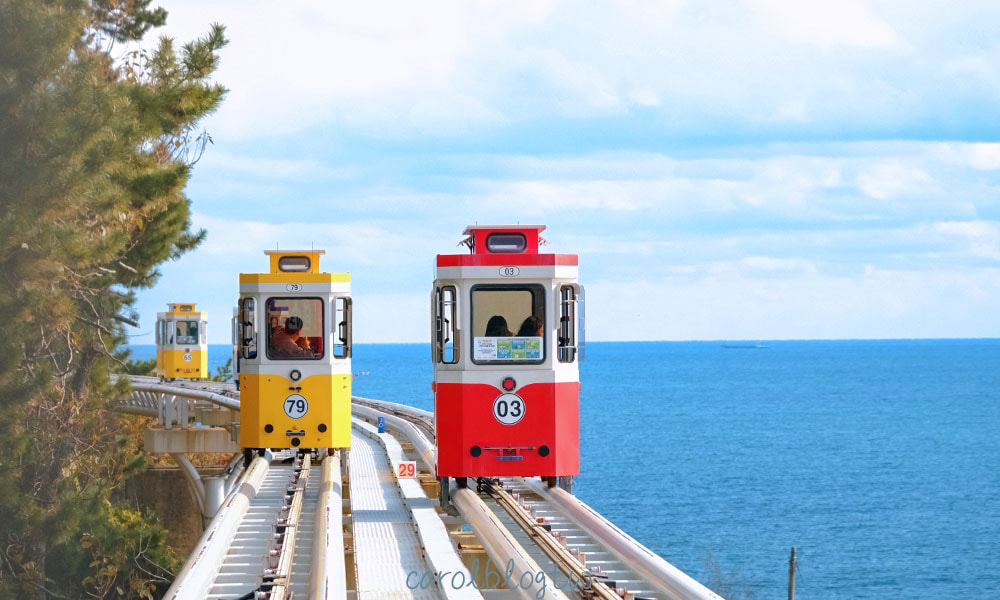
海岸鐵道（膠囊小火車）
沿海岸線行駛的可愛膠囊小火車，車體顏色鮮豔，秋季涼爽的天氣裡搭乘最舒適愜意，沿途欣賞蔚藍海岸風光，是釜山超人氣體驗。

札嘎其魚市場
韓國最大規模的水產批發市場，擁有數十年歷史。秋天正值海鮮當令，螃蟹、鮑魚、扇貝、朱蝦應有盡有，是體驗釜山魚市場文化的必訪之地。
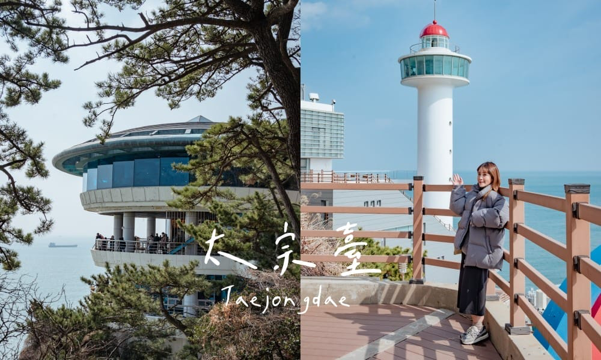
影島太宗台
位於影島南端的懸崖公園，沿海岸線分布，擁有壯闘的海蝕懸崖景觀。秋日海風清爽，站在展望台可將釜山港全景盡收眼底。
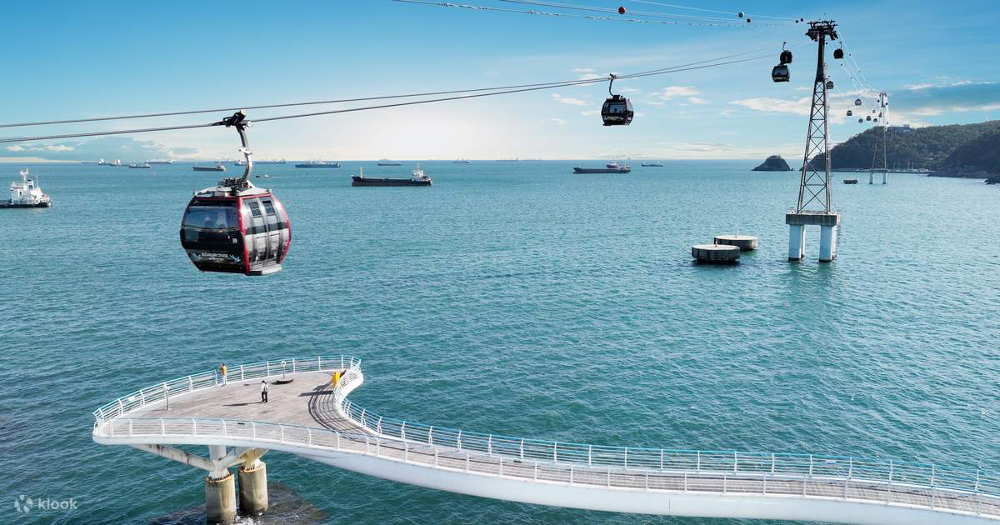
松島海上纜車
跨越松島與岩南之間的跨海纜車系統，膠囊型車廂底部為透明玻璃，可俯瞰腳下碧藍大海，刺激感與浪漫感並存，是釜山新地標。

金剛公園
釜山最大的都市公園，擁有金剛山佛教文化遺址。登山纜車可達山頂，俯瞰釜山港全景，秋日登高氣候宜人，是釜山人的後花園。
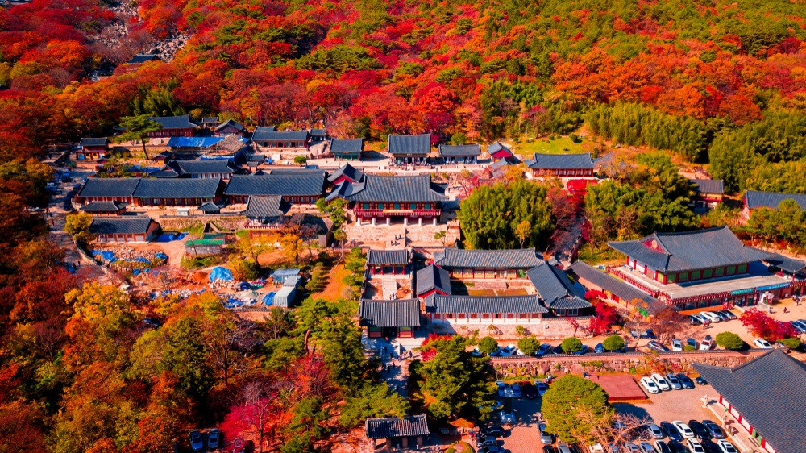
梵魚寺
釜山最著名的佛教古剎，建於新羅時期。寺廟周圍群山環繞，秋季楓紅片片，禪意與自然美景交織，吸引許多國內外旅客前來靜心參訪。
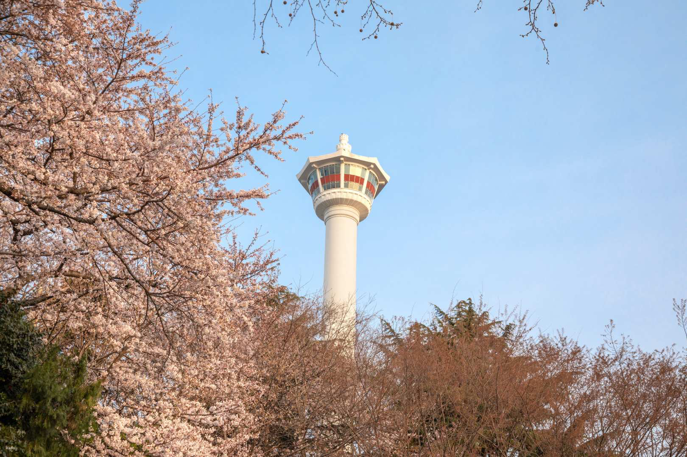
釜山塔
位於龍頭山公園的釜山地標，高120公尺。塔頂360度觀景台可俯瞰釜山全景，夜晚塔身燈光變幻，是欣賞釜山日夜風光的最佳去處。
松島海水浴場
距離釜山市中心最近的海水浴場之一，海水清澈、沙質細軟，搭配松島海上纜車形成的獨特畫面，是釜山代表性的海岸風景。
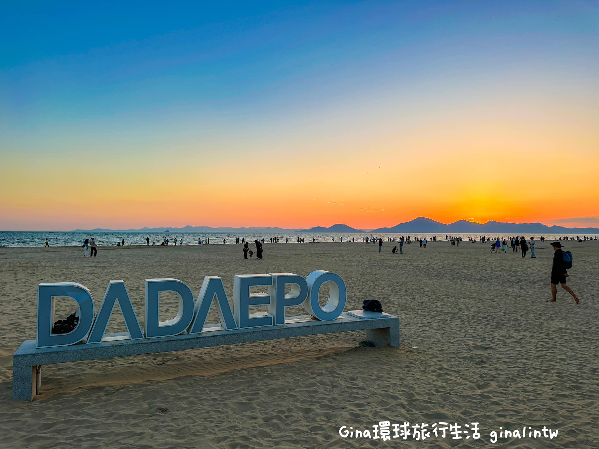
多大浦海水浴場
釜山最西邊的海水浴場，以夢幻日落聞名。沙灘寬廣開闘，秋日夕陽西下時分，金色夕陽與沙灘融為一體，被譽為釜山「最美日落海灘」。
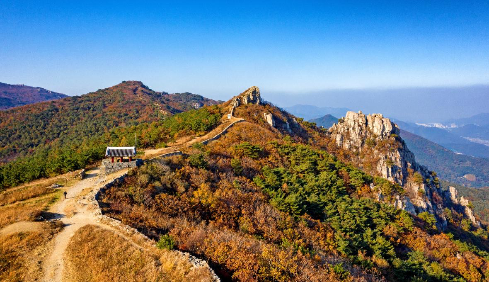
金井山城
環繞金井山的古代城牆遺址，韓國最長的城牆之一。登上城牆可遠眺釜山全景，秋日登城健行，歷史與自然風光兼得。
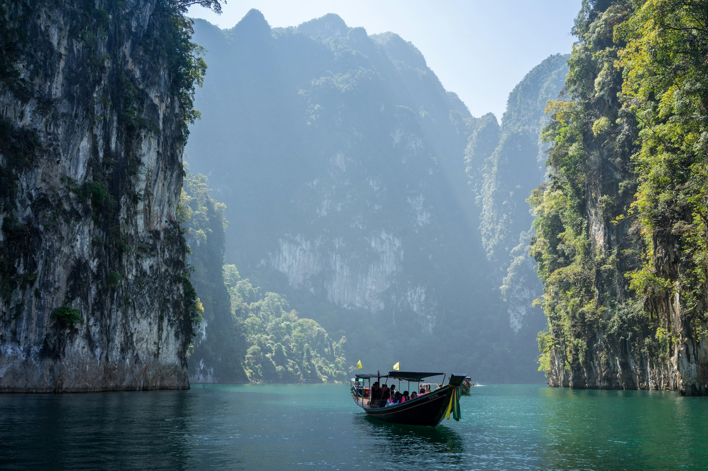
洛東江河口生態公園
釜山重要的濕地生態保護區，擁有豐富的自然生態。秋日蘆葦花海一片金黃，漫步木棧道觀察水鳥，是釜山都會邊緣的生態綠洲。
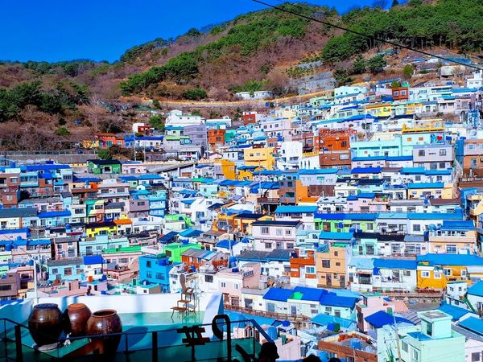
龜浦山洞壁畫村
以生動壁畫聞名的社區藝術村落，主題多元從海洋生態到童話故事都有。相較甘川文化村較少觀光人潮，可悠閒細細欣賞每幅作品。
冬柏公園 APEC世峰樓
2005年APEC會議舉辦地，座落於海雲台冬柏島上，融合海洋與森林的自然景觀。從公園可遠眺廣安大橋，日夜風光皆宜人。
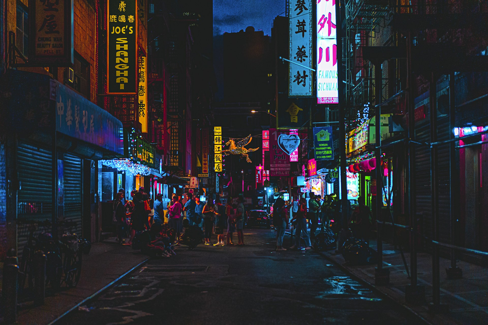
影島大橋
韓國第一座旋轉橋，每晚定時開橋表演，橋身緩緩旋轉90度讓下方船隻通過，橋上遊客可近距離觀賞這項獨特的都市景觀工程。